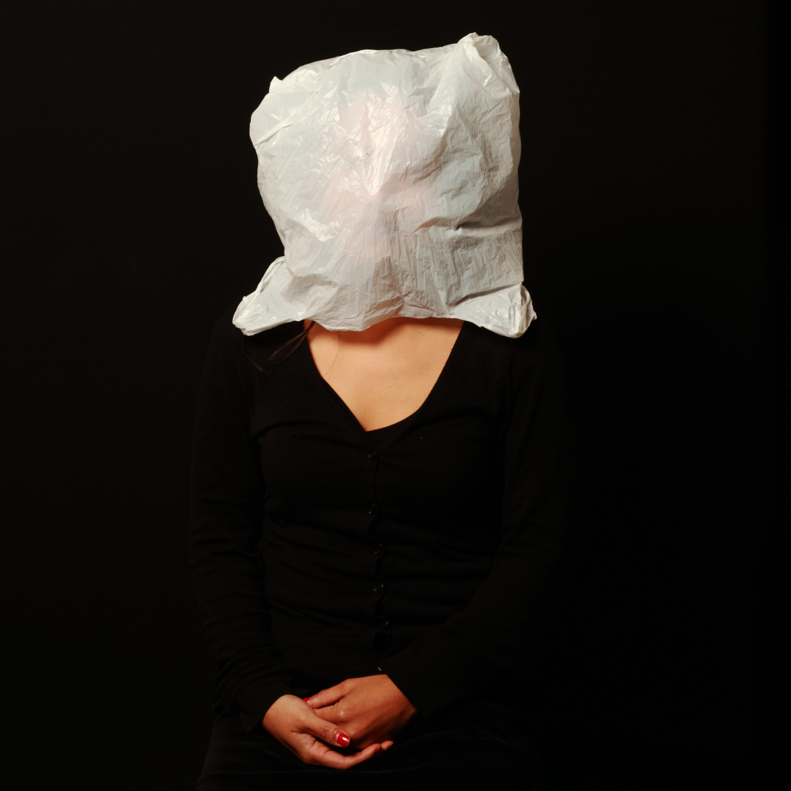

Melissa Ramos is a contemporary artist, and curator.
Her practice conjures landscapes of metamorphosis, and the duality between fantasy & reality. By synthesizing visual & societal opposites, and acknowledging the multiplicity inherent in an image & narrative.
Drawing inspiration from classical motifs, archetypes of femininity, memory, storytelling, mythology, kitsch, symbols and how it connects to everyday life.
Melissa’s work has been exhibited widely; among them include ISEA, USA. The 21st Century Museum of Contemporary Art Kanazawa; Japan. Copenhagen, Denmark, House of Dance Denmark. Vargas Museum, Manila, Philippines. Berlin Asian Film Festival, Haus der Kulturen der Welt Kunstquartier Bethanien, Berlin, Germany.
Education
2003 Bachelor of Electronic Arts | Fine Arts. University of Western Sydney